Cloud Platforms
Design, deploy and operate scalable cloud infrastructure.
 AWSExpert
AWSExpert- AzureAdvanced
 GCPIntermediate
GCPIntermediate- Hetzner CloudIntermediate
PROFESSIONAL PROFILE
Cloud Infrastructure & DevOps Professional
Cloud Infrastructure · DevOps · Kubernetes · Automation · Technical Leadership
IT professional with over 12 years of experience, including more than 7 years in DevOps and cloud infrastructure engineering. Experienced in designing, automating and maintaining production environments, improving CI/CD processes and supporting reliable enterprise platforms. Combines hands-on infrastructure expertise with technical coordination and team leadership experience.
12+ Yearsin IT
7+ Yearsin DevOps
Infrastructure &Technical Leadership
ABOUT
I am a DevOps and cloud infrastructure professional with more than 12 years of experience in IT, including over 7 years in DevOps, infrastructure automation and production environments. My background connects traditional systems administration with cloud engineering, container orchestration and operational reliability.
I have worked in enterprise IT and financial services, collaborating with development, operations and engineering teams supporting business-critical services. My core toolkit includes AWS, Kubernetes, Terraform, Ansible, Linux, Docker and CI/CD platforms such as Jenkins, GitLab CI/CD and GitHub Actions. Monitoring and troubleshooting are part of the same operational responsibility.
Before specializing in DevOps, I led systems administration engineers and coordinated infrastructure work with vendors and contractors. That experience informs how I approach capacity planning, documentation, service continuity and the practical needs of the teams who run and use infrastructure.
I am interested in cloud and platform engineering, infrastructure operations, technical delivery and team leadership. I value clear communication, repeatable automation and maintainable systems, with engineering choices that support operational and business objectives.
PROFESSIONAL EXPERTISE
Design, deploy and operate scalable cloud infrastructure.
Build and operate containerized platforms in cloud and on-premises.
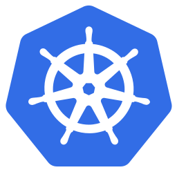
KubernetesExpert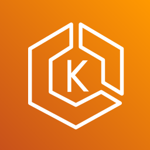
Amazon EKSAdvancedAutomate infrastructure provisioning, configuration and operations.
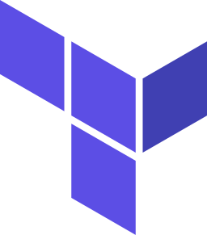
TerraformExpert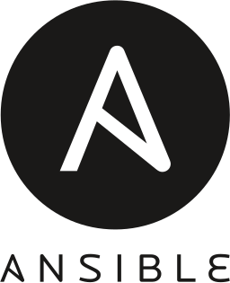
AnsibleAdvanced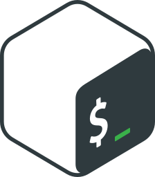
BashAdvancedBuild and maintain CI/CD pipelines and engineering workflows.
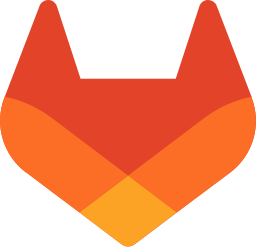
GitLab CIAdvanced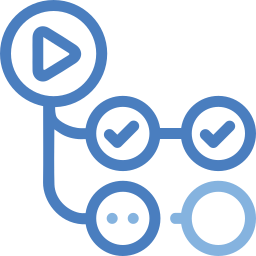
GitHub ActionsAdvanced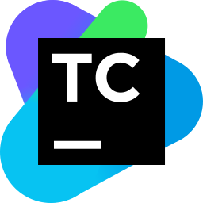
TeamCityIntermediate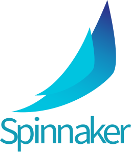
SpinnakerIntermediateImplement monitoring, logging and alerting solutions.
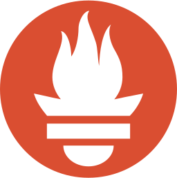
PrometheusExpert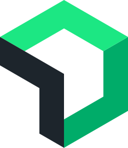
New RelicAdvancedAdminister Linux/Windows environments and data storage solutions.
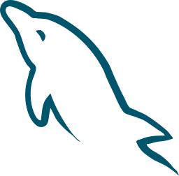
MySQL /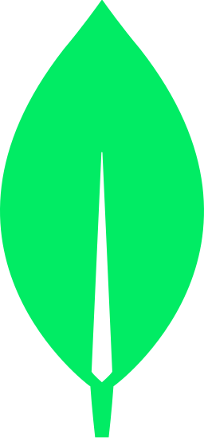
MongoDBIntermediate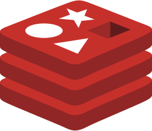
RedisIntermediate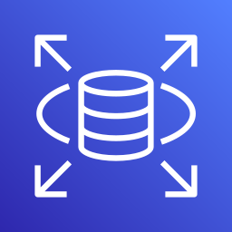
RDS /Implement security best practices and access control.
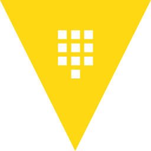
VaultIntermediateUse AI tools and agents to improve engineering productivity and automation.
Infrastructure operations, incident management and technical coordination.
EXPERIENCE
Enterprise engineering, financial services and infrastructure operations. Contract and part-time engagements are identified alongside the employment timeline.
May 2022 – Jun 2026
Customer engineering environments with established CI/CD and production release processes.
Sep 2025 – Jan 2026
Linux application infrastructure supporting PHP/Laravel services.
Oct 2024 – Sep 2025
AWS production infrastructure, container deployments and delivery automation.
Dec 2021 – Jul 2022
Cloud and container platform modernization, including the transition from OKD to Amazon EKS.
Aug 2020 – Dec 2021
Technical integration and onboarding for payment and financial services.
Mar 2020 – Jun 2020
Production service reliability, incident investigation and operational automation.
Sep 2015 – Mar 2020
Enterprise IT operations, data center infrastructure and systems administration team leadership.
PROJECTS
Public engineering work and examples grounded in professional experience.
Open-source project
A reusable CI/CD framework for engineering teams that want one source of build logic across local execution, GitHub Actions, GitLab CI and Jenkins. Python executes jobs defined in YAML with explicit dependencies, reports and resumable runs.
Contribution: Public engineering work demonstrating reusable automation, pipeline dependency handling and a practical approach to reproducing CI behavior locally.
Professional capability
AWS production infrastructure and container platform work across Midcontract and PrivatBank, covering Terraform provisioning, Ansible automation and Kubernetes/Helm deployments.
Contribution: Built and automated AWS infrastructure at Midcontract; supported the OKD-to-EKS migration and deployment validation at PrivatBank.
Professional capability
Delivery automation and operational support across customer engineering environments: build and release workflows, infrastructure changes, monitoring and troubleshooting.
Contribution: Maintained CI/CD and release automation at GlobalLogic; supported incident investigation and recurring operational automation at Namecheap.
EDUCATION
Kharkiv National University of Radio Electronics
Master’s degree · 2022 – 2024
Master’s degree · 2011 – 2013
Master’s degree · 2007 – 2013
CONTACT
Open to discussing opportunities in cloud infrastructure, DevOps, platform engineering, technical leadership and infrastructure operations.
Additional phone: +373 61 039 001
Download CV (PDF)